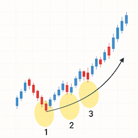

最大勝利株の99%が共有する7つの条件
マーク・ミネルヴィーニが語る「次のアマゾン」の見つけ方 📈 ✨
作成日: 2025-04-21
伝説のトレーダーの警告
2度の全米投資チャンピオンに輝いたマーク・ミネルヴィーニの言葉です。彼が今注目するのは、まだ誰のレーダーにも映っていない「次のアマゾン」です。
1960〜70年代のNifty Fiftyでさえ、時間とともに衰退。現在のMagnificent 7（AAPL, MSFT, NVDA, AMZN, GOOGL, META, TSLA）も例外ではありません。
株式市場は常に「新陳代謝」で進化し、勝者は入れ替わる——だからこそ、次代のリーダー候補をいち早く発掘するフレームワークが必要になります。
7つの条件——"Super-performers"の設計図
ミネルヴィーニは40年のトレード経験を通じて、過去40年間に株価が10倍以上になった"最大の勝利株"の99%が満たしていた7つの共通点を抽出しました。
| # | チェック項目 | 見分け方 |
|---|---|---|
| 1 | 売上高・EPSの急加速 | 直近2四半期連続でEPS＋30%以上、売上高＋20%以上 |
| 2 | 高い自己資本利益率（ROE） | ROE 20%超（理想は25%超） |
| 3 | 新規性ある製品・サービス | 既存シェアを奪う技術やモデルが話題に |
| 4 | 浮動株回転率の急上昇 | 50日平均出来高の2〜3倍が複数日続く |
| 5 | 相対強度(RS)指数≥80 | 52週高値を更新し続け、指数をアウトパフォーム |
| 6 | 上昇トレンドの"テンプレート" |
・株価が200EMA上30%以上 ・50EMA > 150EMA > 200EMA ・52週高値から−25%以内 |
| 7 | 出来高を伴うブレイクアウト | ボラティリティ縮小→高出来高で狭いレンジを上放れ |
VCP（Volatility Contraction Pattern）は必修パターン
99%の大化け株は「押し目」から始動するため、ボラティリティが縮小した後の上放れを狙います。
スクリーニング＆エントリーの4ステップ
粗選別（週末バッチ）
条件1・2・5をFinvizやMarketSmithでフィルタリングし、約500銘柄→50銘柄へ。
チャート精査（構造チェック）
日足・週足で条件6・7を手動確認。VCP、ハンドル付きカップ、フラットベースが理想形。
イベントリスクの排除
決算発表の1〜3週間前後は"ノイズ"増。新規エントリーは期間外が原則。
リスク＆サイズ設定
初期リスク＝【株価×ポジション】×0.5〜1.0%（総資産比）。7〜8%の損切りルールを厳守。
Magnificent 7から"New 7"へ
リーダー交代のサインを見逃すな！
指数寄与度が急拡大し始めたら"天井警戒"——規模が大きくなるほど成長率の維持が困難。
ROICの低下や設備投資増は、競争優位の質的変化を示唆。
市場は「永遠の勝者」という物語を好むが、物語が最も説得力を持つ瞬間こそ転換点になる。
補足メモ
条件1：売上高・EPSの急加速
「構造的伸び」かどうかを2Qで判定
条件2：高いROE
資本効率の良さは上昇トレンドの燃料
条件3：新規性ある製品・サービス
例：NVIDIAのCUDA、AppleのiPhone発表時
条件4：浮動株回転率の急上昇
機関投資家の本格参入サイン
条件5：相対強度(RS)指数≥80
価格がファンダを裏づけ始めた証拠
条件6：上昇トレンドの"テンプレート"
99%の大化け株は「押し目」から始動
条件7：出来高を伴うブレイクアウト
VCP（Volatility Contraction Pattern）は必修パターン
まとめ——次の一手
時価総額30〜300億ドル帯に黄金郷がある。
質的転換点（New Product / New Model / New Market）を敏感に察知。
Check-list → Watch-list → Kill-list——ルールが銘柄を選び、同時に切り捨ても行う。
"次のアマゾン"がどこから現れるかは誰にもわかりません。しかし、最大勝利株の99%が備えた7条件を日々点検していれば、チャートがシグナルを灯したその瞬間をつかみ損ねることはないでしょう。
実践のヒント
- 📊 週末のスクリーニングを習慣化する
- 📝 取引ジャーナルを記録し、パターンを学ぶ
- 📌 ウォッチリストは常に15〜20銘柄に絞る
- ✏️ 7条件をチェックリスト化して毎回確認